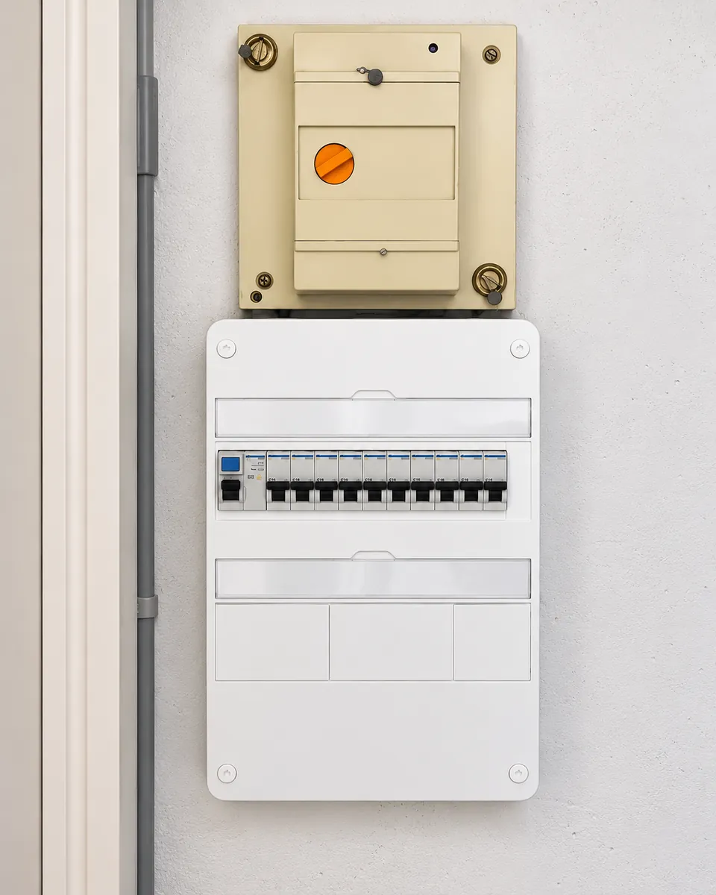
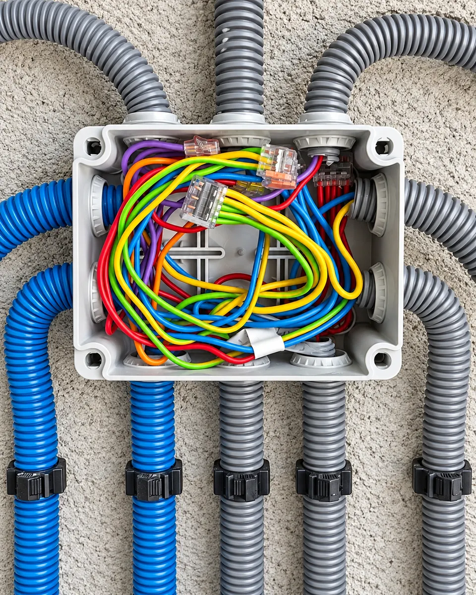
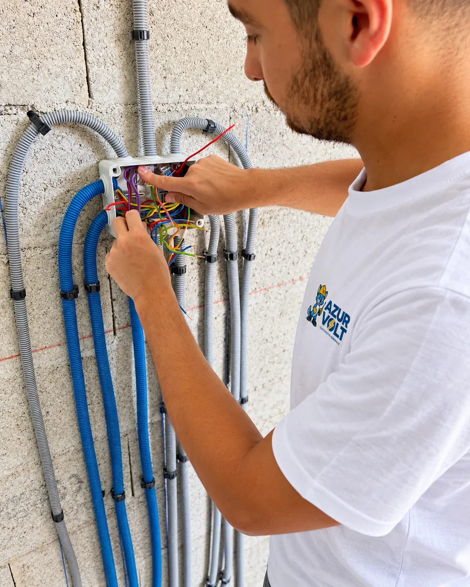
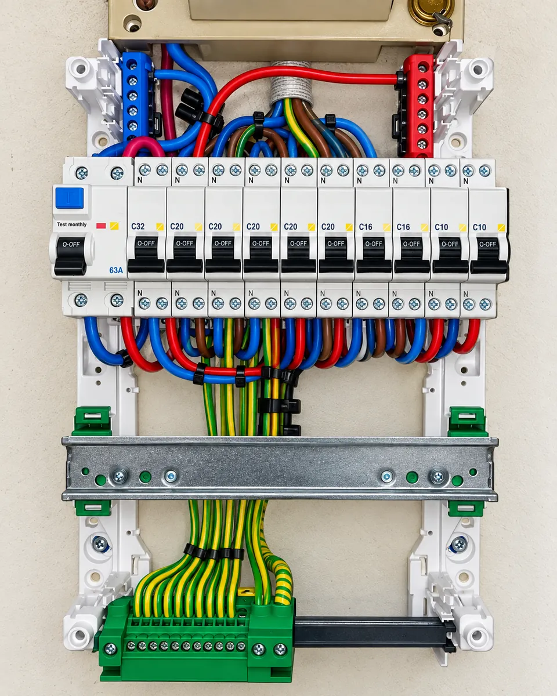
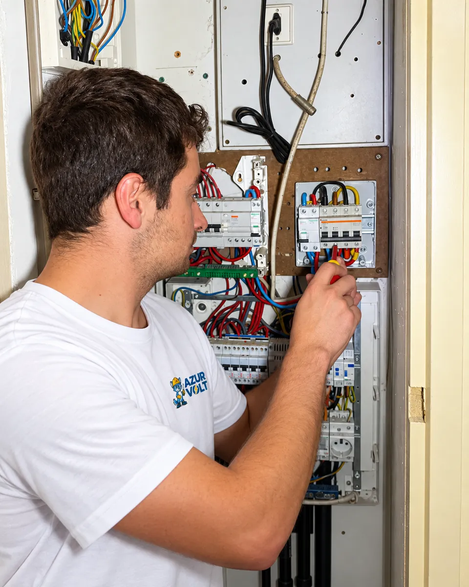
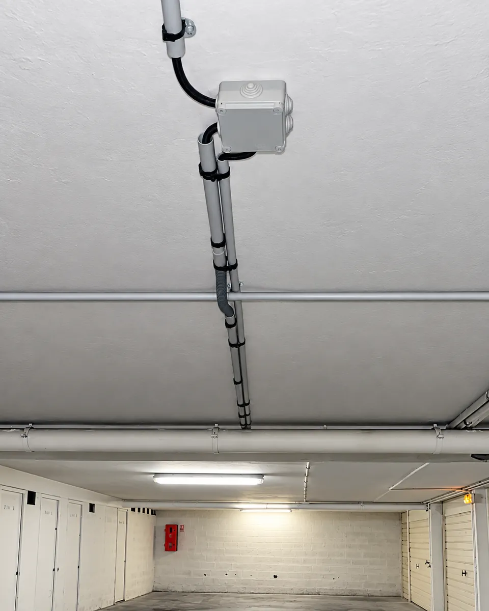
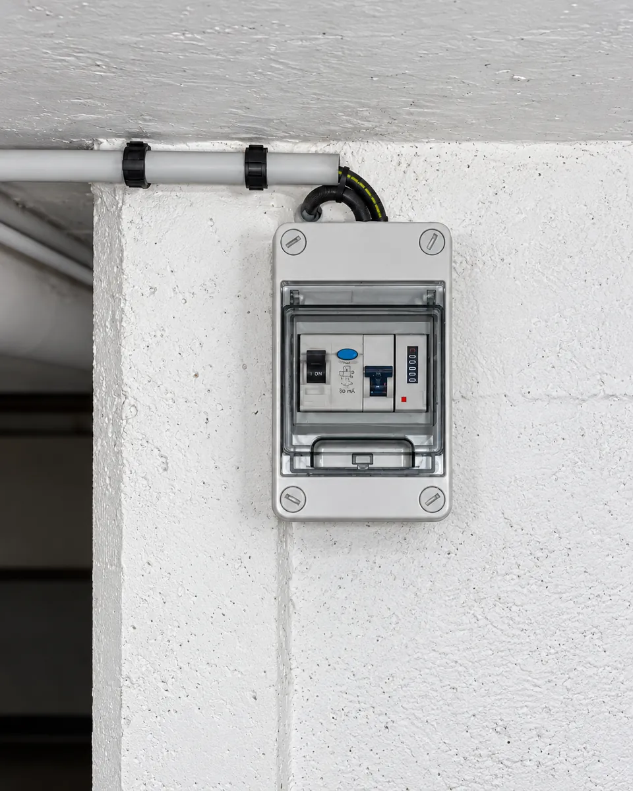

Votre électricien à Cannes.En direct avec Yoni.
Une panne, un tableau à remplacer ou des travaux ? Yoni Ayache vous accompagne, du premier échange à l’intervention.
Un interrupteur, une lumière.
Essayez : chaque bascule commande sa propre ampoule. Chez vous aussi, chaque commande doit faire exactement ce qu’on attend d’elle.
De quoi avez-vous besoin ?
Dépannage, installation ou rénovation, pour votre logement comme pour votre local professionnel.
110 €
Le courant saute ?
Disjoncteur qui déclenche, prise en panne, coupure partielle : Yoni cherche l’origine de la panne.
- Déplacement compris
- Recherche de panne
- Première heure d’intervention

Un tableau à revoir ?
Remplacement, protections et mise en sécurité du tableau.
Tableau électriqueUne prise à ajouter ?
Prise ou interrupteur standard, fourni et posé : 95 €.
Prises et interrupteursUn luminaire à poser ?
Pose d’un luminaire simple que vous fournissez : 110 €.
Éclairage et luminaires
Des travaux en vue ?
Prises, interrupteurs, circuits et rénovation électrique, sur devis.
Installation et rénovationUne installation ancienne ?
Contrôle et mise en sécurité de votre installation.
Mise en sécurité
Un électricien. Un interlocuteur.
La personne à qui vous expliquez votre problème est celle qui intervient chez vous.
Je suis Yoni Ayache, électricien titulaire du CAP, avec 14 ans d’expérience dans l’électricité. Avec Azur Volt, vous échangez directement avec moi, du premier contact jusqu’à l’intervention.
Je vous explique la solution proposée, puis le tarif ou le devis, avant les travaux.
Des interventions réelles, un travail soigné.
Quelques exemples d’interventions réalisées par Yoni à Cannes et alentours.




Simple, dès le premier contact.
Vous contactez Yoni.
Appelez, envoyez un SMS ou utilisez le formulaire avec une photo. Vous expliquez votre besoin directement à Yoni.
Vous savez ce qui est prévu.
Pour un dépannage, Yoni vous indique le tarif et la suite. Pour des travaux, un devis clair vous est présenté avant réalisation.
Yoni intervient.
Vous convenez ensemble du créneau. Yoni réalise lui-même l’intervention : vous gardez le même interlocuteur du début à la fin.
Basé à Cannes.
À votre rencontre.
À domicile ou sur site professionnel. Le forfait dépannage comprend le déplacement, la recherche de panne et la première heure d’intervention.
Voir les zones d’interventionVos retours sur Google
★★★★★5,0 sur 5, 2 avis
« Tres bon electricien !
Je recommande vivement M. Ayache.
Il a été reactif et a un fait du travail de qualité. »
« Très bonne expérience avec Yoni !
Réactif, sérieux et professionnel.
Travail propre et explications claires.
Un électricien fiable et efficace, je recommande sans hésiter ! »
Avis publiés par leurs auteurs sur la fiche Google d’Azur Volt et reproduits sans modification. Azur Volt ne contrôle pas ces avis ; leur publication et leur modération relèvent de Google. En savoir plus
Les réponses à vos questions.
Combien coûte un dépannage ?
Le forfait de départ publié est de 110 € à Cannes et au Cannet, 120 € à Antibes et Mandelieu-la-Napoule : déplacement, recherche de panne et première heure d’intervention. Si du matériel ou des travaux complémentaires sont nécessaires, la suite vous est expliquée avant de poursuivre.
Quels sont les horaires ?
Azur Volt est ouvert du lundi au samedi, de 8 h à 18 h. Le dimanche est fermé. Le créneau d’intervention est convenu avec Yoni selon les disponibilités.
Une photo suffit-elle pour un devis ?
Une photo aide à préparer l’échange. Selon les travaux, une visite est nécessaire pour examiner l’installation et établir le devis.
Intervenez-vous aussi pour les petits travaux ?
Oui : prises, interrupteurs, luminaires et modifications ponctuelles de l’installation. Décrivez votre besoin par téléphone, SMS ou formulaire.
Montrez-moi
le problème.
Quelques mots, votre ville et une photo si vous le souhaitez. Pour une panne comme pour un projet.
Du lundi au samedi, de 8 h à 18 h. Fermé le dimanche.
Interventions selon les disponibilités.